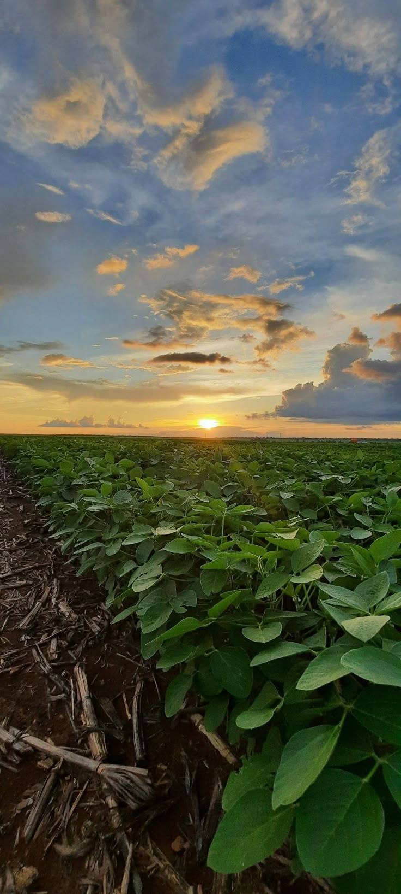
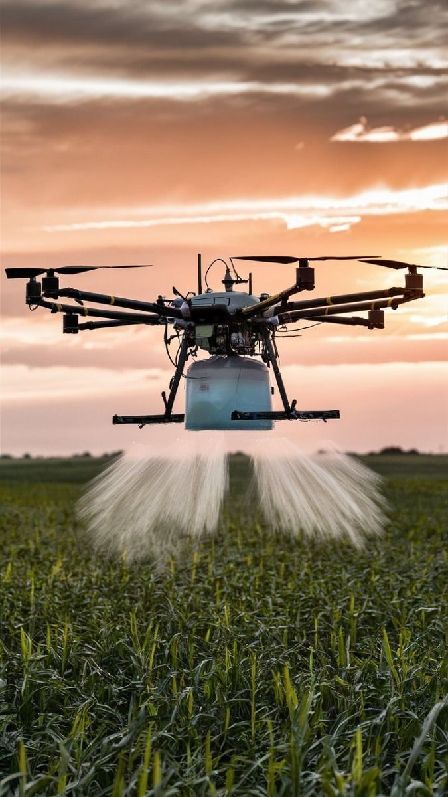
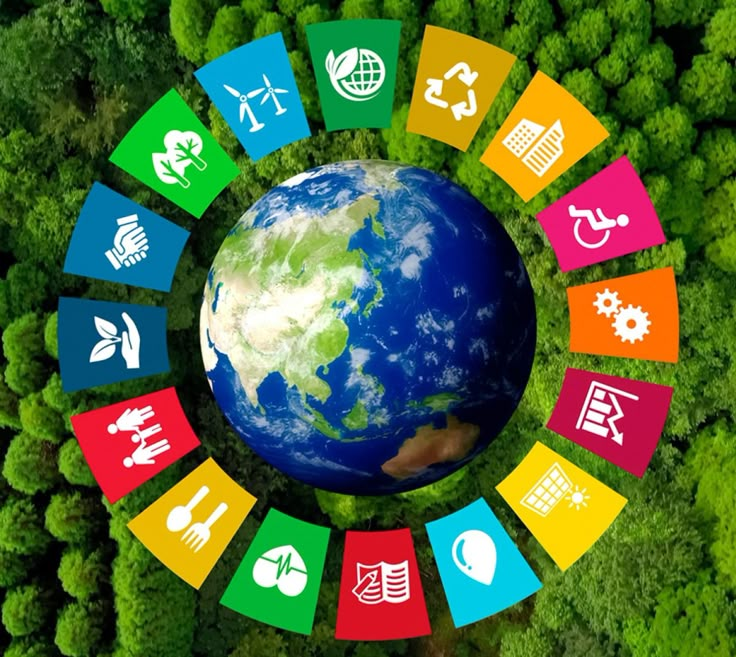

Safra paranaense deve crescer em 2026
As estimativas apontam crescimento da produção de soja, impulsionado pelo uso de tecnologias agrícolas e pela ampliação da produtividade.
O Paraná é um dos maiores produtores de soja do Brasil. A eficiência produtiva busca aumentar a produção utilizando menos recursos naturais, reduzindo desperdícios e ampliando a produtividade por hectare.

21,1
Milhões t
22,0
Meta 2026
0,9
Faltam
Drones, sensores, GPS e inteligência artificial ajudam os produtores a monitorar lavouras, prever problemas e utilizar recursos de forma mais eficiente.

75%
Monitoramento
350
Drones
2026
Meta
O agronegócio sustentável busca proteger o solo, economizar água e preservar a biodiversidade, garantindo a produção para as futuras gerações.

85%
Plantio Direto
30%
Economia de Água
100%
Meta Verde
A Agenda 2030 da ONU reúne objetivos globais voltados ao desenvolvimento sustentável. O agronegócio contribui principalmente para o ODS 2, que busca alcançar a segurança alimentar e promover uma agricultura sustentável.

17
ODS
2030
Meta Final
2
ODS Principal
As estimativas apontam crescimento da produção de soja, impulsionado pelo uso de tecnologias agrícolas e pela ampliação da produtividade.
Cada vez mais produtores utilizam drones, sensores e monitoramento por satélite para aumentar a eficiência da produção agrícola.
Práticas como plantio direto e rotação de culturas ajudam a conservar o solo, reduzir a erosão e proteger os recursos naturais.
O setor agrícola possui papel fundamental para atingir metas relacionadas à segurança alimentar e ao uso sustentável dos recursos naturais.